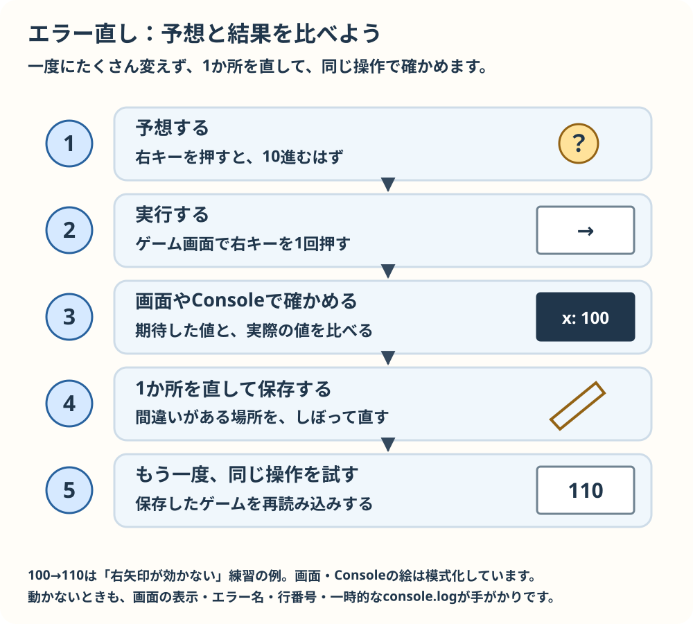
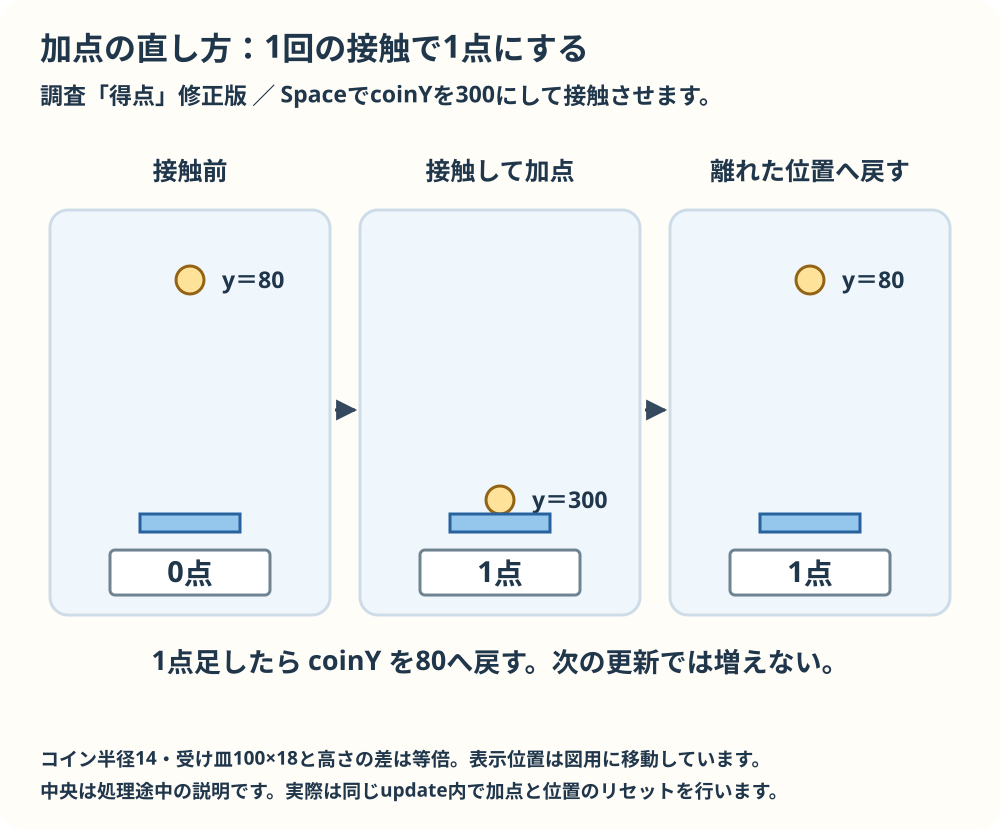

こわれた見本を調べて直す
予想してから見本を開き、画面やConsoleで確かめます。自分用に3ファイルをコピーし、1か所を直して保存し、ゲーム画面を再読み込みします。画像の問題ではassetsフォルダーも一緒にコピーします。
Consoleはブラウザーの開発者ツールにあります。多くのWindowsブラウザーではF12、MacではOption + Command + Iで開き、Consoleを選べます。画面が止まったらエラーの名前と行番号を見ます。入力はゲーム画面をクリックしてから試します。

まず期待する動きを予想し、実際に操作して比べます。画面やConsoleの値を手がかりに、1か所を直して保存しましょう。再読み込みして同じ操作を試すと、直ったか確かめられます。
閉じ括弧が足りない
青い四角が出るはずです。画面とConsoleを見て、どこで読み取れなくなったか予想します。
ヒント1
ConsoleのSyntaxErrorと行番号を見ます。
ヒント2
fillRectの引数を囲む括弧を数えます。
答えと変更箇所
fillRectの末尾に閉じ括弧を1つ戻します。
比較（読むための表示）
変更後の行（コピー用）：
ctx.fillRect(100, 100, 80, 80);直したら保存し、コピー先のゲーム画面を再読み込みして、期待した動きをもう一度確かめます。
変数名が違う
得点0が表示されるはずです。Consoleでエラーの種類と名前を確かめます。
ヒント1
ReferenceErrorが指す名前を探します。
ヒント2
宣言した名前と表示するときの綴りを一文字ずつ比べます。
答えと変更箇所
scroeをscoreに直します。
比較（読むための表示）
変更後の行（コピー用）：
ctx.fillText("得点: " + score, 100, 100);直したら保存し、コピー先のゲーム画面を再読み込みして、期待した動きをもう一度確かめます。
右矢印が効かない
右矢印を1回押すとxが100から110へ変わるはずです。
ヒント1
開発者ツールのConsoleを開き、イベントの中に一時的にconsole.log(event.code)を入れて押します。
ヒント2
Consoleの値と条件の文字を比べます。確認後、追加したconsole.logは消します。
答えと変更箇所
ArrowRigthをArrowRightに直します。
比較（読むための表示）
変更後の行（コピー用）：
if (event.code === "ArrowRight") { x += 10; draw(); }直したら保存し、コピー先のゲーム画面を再読み込みして、期待した動きをもう一度確かめます。
触れている間に点が増え続ける

接触したままだと、更新のたびに点が増えてしまいます。1点足したら、コインを離れた位置へ戻しましょう。次の更新では接触条件が偽になり、点は増えません。
Spaceを1回押し接触させます。1点だけ増えるはずが、増え続ける理由を予想します。
ヒント1
updateは何度も動きます。接触後のcoinYを画面または一時的なconsole.log(coinY)で確かめます。
ヒント2
加点後も条件が真のままです。確認後、追加したconsole.logは消します。
答えと変更箇所
得点を増やした後にcoinYを80へ戻します。
比較（読むための表示）
変更後の行（コピー用）：
if (coinY >= 300) { score += 1; coinY = 80; }直したら保存し、コピー先のゲーム画面を再読み込みして、期待した動きをもう一度確かめます。
やり直しても得点が残る
Spaceで得点してRを押すと0に戻るはずです。
ヒント1
startが呼ばれる直前と直後のscoreを画面か一時的なconsole.logで確認します。
ヒント2
startの中で何を初期化しているか見ます。確認後、追加したconsole.logは消します。
答えと変更箇所
startの中でscoreを0にします。
比較（読むための表示）
変更後の行（コピー用）：
function start() { score = 0; }直したら保存し、コピー先のゲーム画面を再読み込みして、期待した動きをもう一度確かめます。
画像の場所が違う
青い画像が出るはずです。失敗時の表示を見て原因を予想します。
ヒント1
assetsフォルダーの実際のファイル名を確認します。
ヒント2
srcの名前と一文字ずつ比べます。
答えと変更箇所
player-bleu.pngをplayer-blue.pngに直します。
比較（読むための表示）
変更後の行（コピー用）：
image.src = "assets/player-blue.png";直したら保存し、コピー先のゲーム画面を再読み込みして、期待した動きをもう一度確かめます。
最初の「閉じ括弧が足りない」のこわれたscript.jsだけは、練習用に意図して構文エラーを含めています。